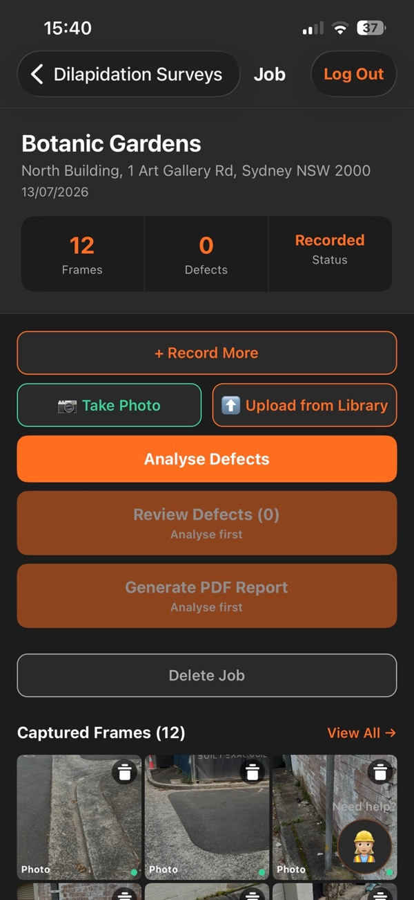
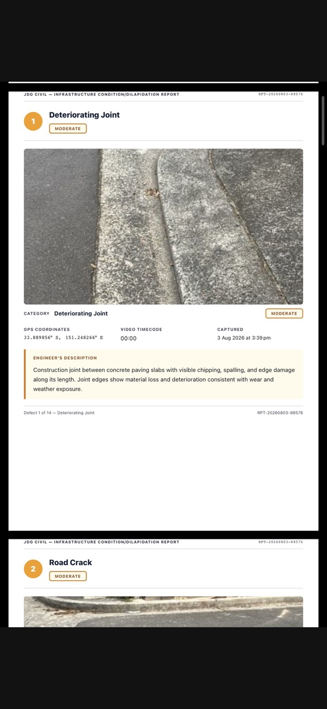
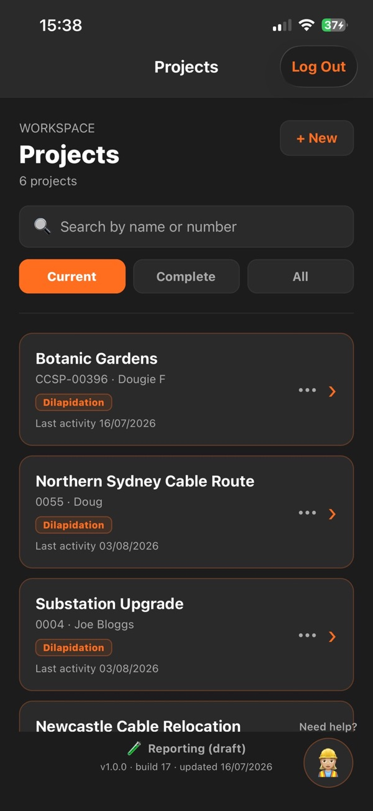
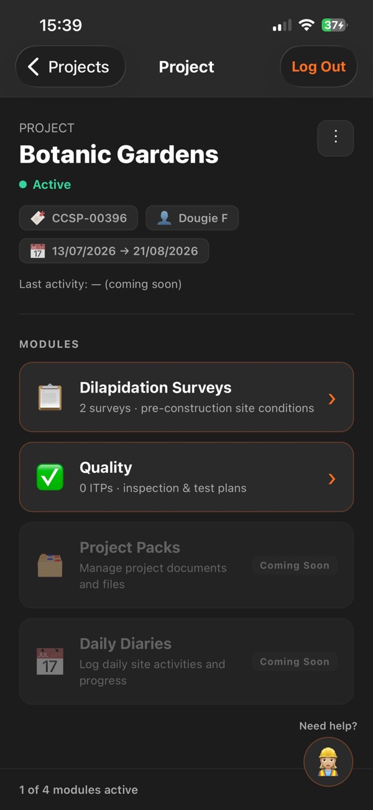
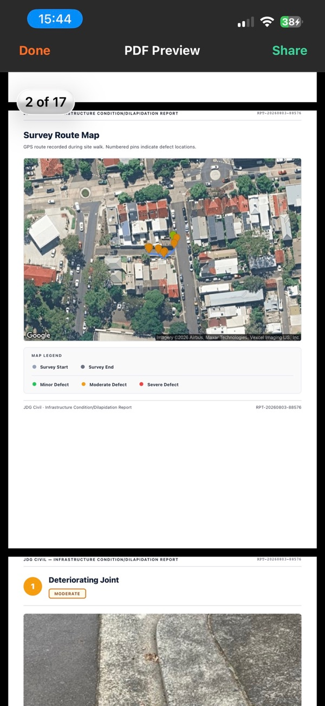

Dilapidation surveys, done before you leave site.
Walk the route, capture photos and video, and let CivilStack find the defects, pin them on a satellite map and write the report. Branded PDF, signed and ready to send.


Built around how site teams actually work
Developed with civil engineering contractors, so every feature solves a real problem on a real project.
AI defect detection
Cracks, joints, spalling and more, picked out automatically across nine defect categories.
Defects on the map
Every defect is GPS-tagged and plotted on satellite imagery along the survey route.
Branded reports
Professional, branded PDF reports with digital signature, ready to send to the client.
Whole-team cloud sync
Start a survey on one device and finish it on another. Your team sees the same jobs.
Works without signal
Capture in tunnels, basements and dead zones. It syncs when you're back online.
Office web app
Office staff review and manage surveys from the desktop, with role-based access for engineers and admins.
Start with surveys. More is coming.
Organise every module under a single project.
From site to signed report



Want CivilStack on your next project?
Questions, demos and pricing for your team: email us and we'll get back to you.